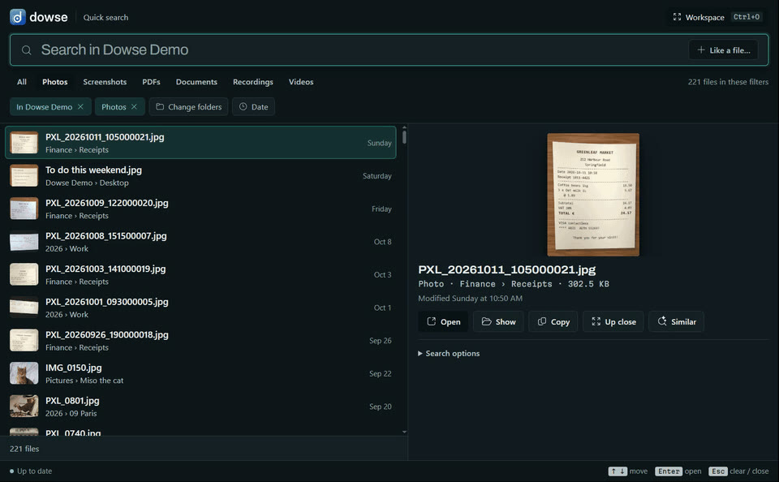

Find anything on your PC by what's in it.
Describe a photo, a document, a recording or a video in your own words. Dowse finds it, at the right page or moment, and runs entirely on your PC.
The two-minute tour, with sound: the real app on a demo library.
Windows search reads names. Dowse reads what's inside.
No items match your search.
Looks at what each file shows, says or sounds like, and matches it to your words.

It reads each file with EmbeddingGemma 2, Google DeepMind's open multimodal embedding model. It places a photo, a page, a stretch of sound or a video shot near the words that describe it, so what you type is matched to what's inside.
Press Alt + Shift + Space, and describe it.
From any app. Results come as you type, and Enter opens the file at the page or moment.
A photo, by what it shows
finds IMG_0011.jpg · 2025 › 06 Lisbon
Phone photos (HEIC too) and screenshots, whose words are read by Windows' own OCR.
A document, open at the page
finds Tenancy agreement Linden Street.pdf · the Pets clause
Ask it as you'd ask a person. PDFs open at the page with your words marked. Word, PowerPoint, notes, e-mails and e-books too.
Sound and video, at the moment
finds Money Matters 04 · budgeting basics.mp3 · at 0:25
Recordings and videos are found by what's said and seen, and play from where it happens.
In any language
"the bakery receipt in Paris" · the same receipt from 13 languages
Search in one language, find files written in another.
Start from a file, or just look around.
More like this
From any result, its look-alikes: from one receipt, the others.
Drop in any file
A photo Dowse has never seen finds the ones like it. It's read to compare, never added.
The Workspace
The same search as a gallery: the closest files come forward.
Explore
Your files laid out by what they're about, in aisles you can name.
- Every kind of file
- Photos, screenshots, PDFs, Word, PowerPoint, OpenDocument, notes, e-mails, e-books, code, recordings, videos.
- Plain dates and kinds
- "electricity bill from March" just works. When nothing matches, it says so.
- Always up to date
- New, changed, moved and deleted files are followed live, seconds after they appear.
Read and searched on your PC. Never uploaded.
The model runs locally through llama.cpp: on your graphics card when you have one worth using, on the processor otherwise. No account, no cloud.
-
Your files stay where they areDowse never changes, moves, uploads or copies them.
-
The index stays on your PCAnd Settings can encrypt it with your Windows sign-in.
-
Online onceTo download the model (from Hugging Face) and the runtime (from llama.cpp's releases), at setup or when you switch. Nothing else.
-
Some things are never readKeys and password files, OneDrive files that are only online, and code projects' internals.
One model for every kind of file.
Read
Pictures, PDF pages, document passages, screenshot text, 30-second windows of sound, video shots.Embed
EmbeddingGemma 2 turns each into 768 numbers, in one space for every kind.Keep
One SQLite file on your PC: those vectors, plus a keyword index of names and text.Find
Your words go through the same model; meaning and keywords are ranked together.
Measured on a demo library of 974 files (548 MB) with an RTX 4070 Ti and a Ryzen 9 7900X. Yours will differ, and the benchmark measures your own. Files are read once; after that, only new or changed ones. More: per kind of file · ranking and readers.
Free and open source.
Windows installer
Per user, no admin rights, with everything it needs inside: no Python or Node to install. On first run, Dowse downloads its model (about 865 MB) and runtime, then works offline.
Download Dowse-Setup-0.1.1.exe 57 MBThis first release isn't code-signed yet, so Windows may warn about an unknown publisher. Download it only from here or the GitHub release, and you can check it against its SHA-256 checksum. Code signing policy.
- SystemWindows 10 or 11, 64-bit
- DiskAbout 1 GB for the model and runtime
- GraphicsOptional: a card with 2 GB or more (NVIDIA, AMD or Intel) speeds up reading
Run it from source
# Python 3.12 or 3.13, uv, and Node 22+
git clone https://github.com/WalidHadri-Iron/dowse.git
cd dowse
cd web; npm install; npm run build; cd ..
uv sync
uv run dowse-app
The first run lets you pick a model and folders, says how long reading them will take, and sets the shortcut. Full guide: using Dowse.
Good to know
Does it need the internet?
Only once, to download its model and runtime (about 1 GB). After that it works offline, and your files and searches never leave your PC.
Do I need a graphics card?
No. Searching is just as quick on the processor. A graphics card makes the first reading of your files much faster, PDFs and documents most of all.
What does it cost?
Nothing. Dowse is open source under the MIT licence. The EmbeddingGemma 2 model is downloaded at setup and used under the Gemma Terms of Use.
Which files does it read?
The folders you choose, single files you add from Explorer's right-click menu, and, if you turn it on, new screenshots as you take them. Anything can be switched off from the Library.
Why does Windows warn me about the installer?
Windows shows a SmartScreen or unknown-publisher warning for programs that aren't code-signed, and this first release isn't yet. Signing is on the roadmap. Until then, download only from this page or the GitHub release, and compare the file with its SHA-256 checksum (in PowerShell: Get-FileHash Dowse-Setup-0.1.1.exe).
Mac or Linux?
Not yet. They're on the roadmap, along with a signed installer and a way for AI agents to search your files.